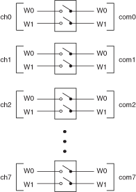
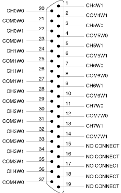

The following figure represents the NI PXI-2564 in the 8-DPST topology.

Both the scanning command, ch2->com2;, and the immediate operation, niSwitch Connect Channels VI or the niSwitch_Connect function with parameters ch2 and com0, result in the following connections:
signal connected to CH2W0 is routed to COM2W0
signal connected to CH2W1 is routed to COM2W1
The following figure identifies the pins for the NI PXI-2564 in the 8-DPST topology.
